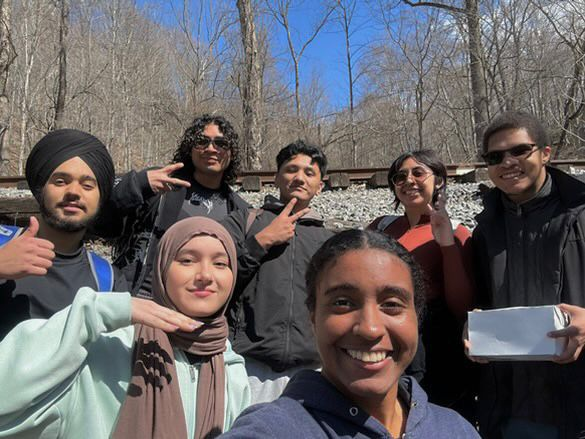
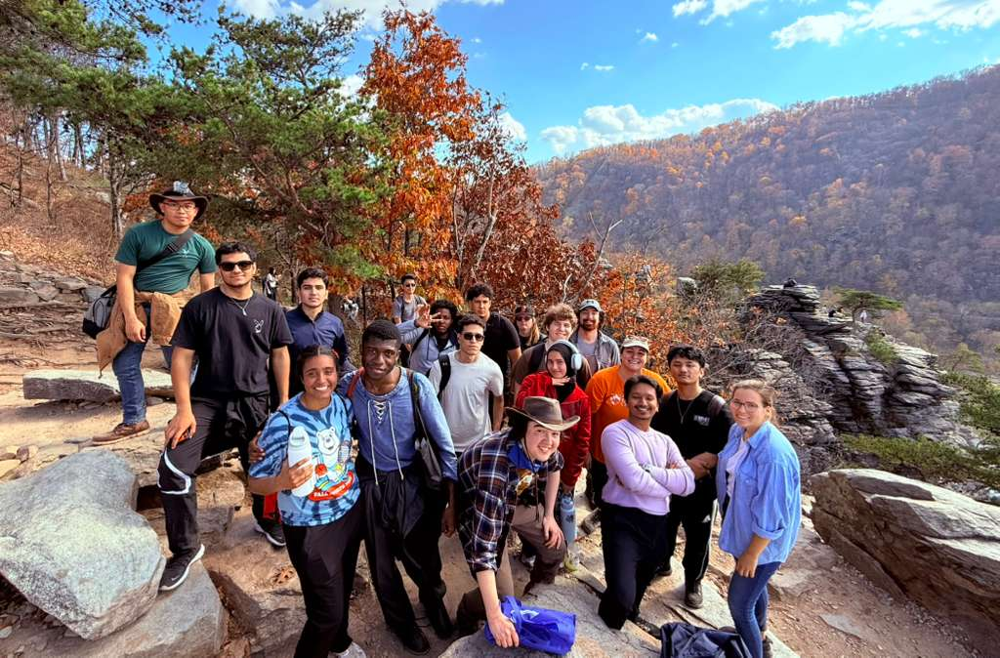

The Hiking Club, called Nature Valley Critters, is one of the most exciting clubs on campus.
They organize about three hikes each semester, giving students a chance to explore nature, stay active, and enjoy the outdoors together.
It’s a great way to meet new people, relax, and experience beautiful trails throughout the semester.

Meeting new People
Nature Valley Critters is also a great place to make new friends.
Through the hikes and group activities, I’ve had the chance to meet students from different countries and cultures.
Some of the best people I’ve met in college were through this club,
and the friendships I made here truly made my experience more special and meaningful.

Exploring Nature
Being in nature every now and then is very helpful,
especially for a student who spends most of their time in front of a screen.
It gives your mind and eyes a much-needed break from assignments, phones, and computers.
Spending time outdoors helps reduce stress, improves focus, and makes you feel more refreshed and motivated.
Even a short hike or walk can make a big difference in your mood and energy.